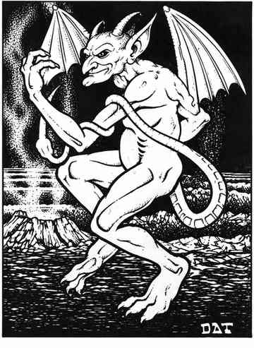

小魔鬼 · Imp
 |
|
小魔鬼在物质位面极为罕见，但在阿刻戎与地狱位面并不少见。它由幼虫转化而来，是极低阶的魔鬼；它会成为守序邪恶阵营魔法师或牧师的魔宠，借此散播邪恶。小魔鬼可随意变形成下列四种动物中的两种：巨型蜘蛛、乌鸦、巨鼠或山羊。
未变形时，小魔鬼以尾巴攻击；被尾巴击中的生物必须通过对抗毒素的豁免检定，否则死亡。判定命中时尾巴视为匕首。变形成动物时按该动物的攻击方式行动；乌鸦与山羊没有有效攻击。
小魔鬼无论处于何种形态，都能使用全部魔法能力：侦测善良、侦测魔法、每个近战轮恢复 1 点生命值、随意隐形，以及每天一次建议术。只有银制武器或魔法武器能伤害小魔鬼。寒冷、火焰与电击类魔法攻击均无效；计算对它施法的效果时，将小魔鬼视为 7 颗生命骰生物。
小魔鬼智力一般，却十分狡猾；作为魔宠时，还能借用大魔鬼的智慧。
魔宠小魔鬼对主人的助益。 小魔鬼与主人建立心灵感应；主人能接收小魔鬼的所有感官印象，包括红外视觉画面，距离最远可达 1 英里。小魔鬼处于 1 寸内时，主人获得 25% 魔法抗性，并且每个近战轮恢复 1 点生命值。小魔鬼若在 1 英里内，主人提升 1 个能力等级；若距离超过 1 英里，主人降低 1 级；小魔鬼若被杀，主人降低 4 级。除此之外，小魔鬼每周可联系一次下层位面，帮助主人决定行动方向；该联系类似“神谕术”，但可提出 6 个问题。